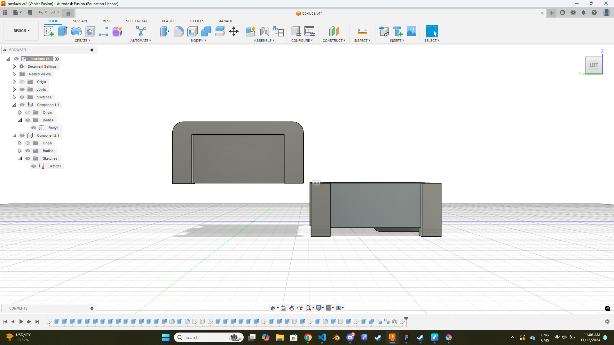

The first part of designing this project was thinking of what I
should make or fix; the only problem was finding something to fix.
After a lot of struggling, I decided I'd make a small container in
the shape of a chest from Zelda.
The Prototype
Remaking the sketch in Fusion was generally easy, with some minor
problems being designing the decoration in the center of the chest,
but after getting some help from teachers, I was able to get it all
working.

After finishing the sketch, I had to make it all solid which, with
some minor hiccups when it came to the legs, was overall very easy
and I was able to finish it very quickly.
Using a tutorial, I was able to design the hinges in no less than 15
minutes, the entire process was stupidly simple, and overall I felt
I had learned the basic principles of hinges in Fusion.
The Final Product
There were some minor hiccups in printing the chest, mostly because
of the way the bottom of the chest was designed. It required a lot
of supports that had to be removed once it finished printing.
The chest makes for a very good decoration, it's capable of holding
small objects and so far, I've been using it to store the cartridges
for my Nintendo games.
The inside is very spacious, and opening and closing the chest
provides a lot of entertainment as a fidget toy. Overall, the
project came together perfectly and I was able to create something
I'm very proud of.